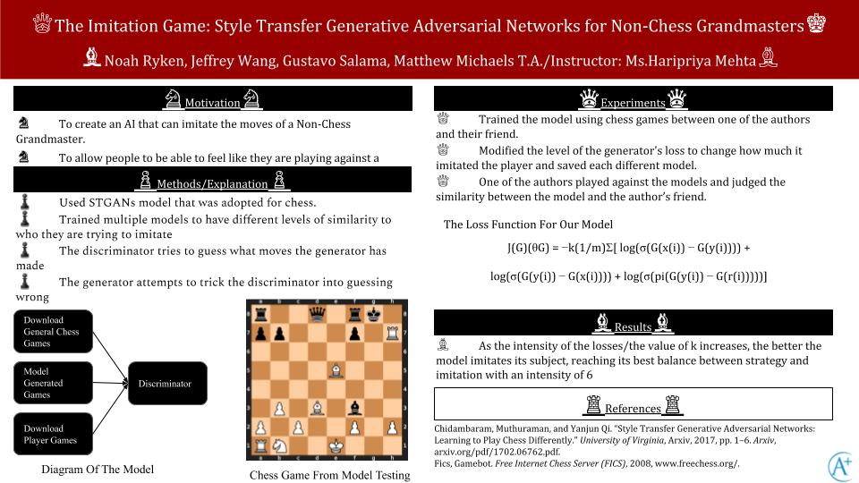

The Imitation Game: Style Transfer Generative Adversarial Networks for Non-Grand Chess Masters
Noah Ryken, Jeffery Wang, Gustavo Salama, Matthew Michaels
Our Abstract:
A STGANs (Style Transfer Generative Adversarial Network) was previously applied to professional chess players in an attempt to imitate their style. However, we attempted to apply STGANs onto casual players instead, to see whether STGANs could successfully imitate casual players, due to casual chess players making more diverse and intricate decisions. We used one of the author's friend's chess games to train the STGANs model, and the author judged the model's performance in a chess match based on how similar the style was to the author's friend. (Add Part About Results)
Link To Our Github
Here Is Our Code
Our Poster

Our Paper
Our Demo Video